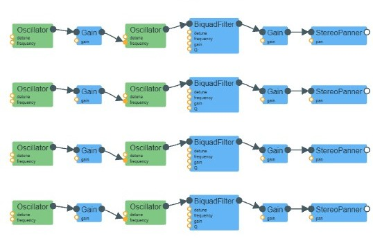

my strategy for making the bird sounds was to create an individual 'chirp' function, then repeat it at random intervals to sound like several birds chirping. then, i layered 'foreground' and 'background' birds to give the listener some sense of spatial awareness. finally, i added some brown noise to simulate the ambient sound of nature (similar to what i did with the babbling brook).
first, i created a function for a single chirp. the foreground and background chirp functions are similar, so i will just walk through the background chirps and note any interesting differences (overall, i added much more variability/randomness to the parameters compared to the background chirps).
i started with a randomized base pitch, then i added a pitch envelope with a peak and a drop for each chirp to make it sound more realistic. i created some randomness for this envelope as well, so that when you play many chirps, there is variation in both the base pitch and the pitch shape.
const basePitch = 2000 + Math.random() * 1000; const osc = audioCtx.createOscillator(); osc.type = "sine"; // pitch envelope const up = basePitch * (1.1 + Math.random() * 0.1); const down = basePitch * (0.95 + Math.random() * 0.05); osc.frequency.setValueAtTime(basePitch, time); osc.frequency.linearRampToValueAtTime(up, time + 0.02); osc.frequency.linearRampToValueAtTime(down, time + 0.1);
then i made a gain envelope using linear and exponential ramps and adjusted the parameters to make it sound more snappy, and added an lfo for more complexity. for the foreground birds, i made the lfo gain much higher and with more randomness, creating that slight vibrato effect.
const gain = audioCtx.createGain(); gain.gain.setValueAtTime(0, time); gain.gain.linearRampToValueAtTime(0.5, time + 0.03); gain.gain.exponentialRampToValueAtTime(0.001, time + 0.1); const lfo = audioCtx.createOscillator(); const lfoGain = audioCtx.createGain(); lfo.frequency.value = 6 + Math.random() * 2; lfoGain.gain.value = 15; lfo.connect(lfoGain).connect(osc.frequency);
next i added an lpf because the chirps sounded too harsh. i used a bandpass filter for the foreground birds.
const filter = audioCtx.createBiquadFilter(); filter.type = "lowpass"; filter.frequency.value = 3000;
to make the birds more distant and ambient, i created a stereo panner node and randomized the pan value so that the chirps sound like they are coming from all directions in the background. the magnitude of the pan values was higher for background birds, whereas foreground pan values were lower so that the birds sounded more central.
const panner = audioCtx.createStereoPanner(); panner.pan.value = (Math.random() < 0.5 ? -1 : 1) * (0.6 + Math.random() * 0.4);
to make the chrips play naturally, i made a function to schedule the chirps in a semi-random fashion.
i scheduled "bursts" of chirps, each with a slightly randomized duration. after this burst of notes, i let the bird "rest" for a couple seconds before the loop starts again. due to this intentional randomness, the bird chirps fluctuated both in count and in rhythm, while still sounding pretty natural (in my opinion).
then i set the number of background birds so that the chirps would layer over one another nicely. i played around with the base count and decided on 3 because it sounded realistic and not too hectic. i set the base number of foreground birds to just 1.
function scheduleBird() { if (!running || document.getElementById("soundSelect").value !== "birds") return; const now = audioCtx.currentTime; const notes = 3 + Math.floor(Math.random() * 3); for (let i = 0; i < notes; i++) createChirp(now + i * (0.15 + Math.random() * 0.1)); const delay = 1500 + Math.random() * 1000; const timer = setTimeout(scheduleBird, delay); birdTimers.push(timer); } function startBirds() { birdTimers = []; const birdCount = 3; for (let i = 0; i < birdCount; i++) scheduleBird(); } function stopBirds() { birdTimers.forEach(t => clearTimeout(t)); birdTimers = []; }
i played around with parameters for the foreground birds, mainly adding more randomness to their duration and number of chirps!
using Audion, this is what the audio signal flow looks like:

finally, to make it sound like we are in a forest or wilderness preserve or something, i added the brown noise code snippet given in the assignment description. i made the gain pretty low since it's more of a background noise.
function createBrownNoise() { const bufferSize = 10 * audioCtx.sampleRate; const noiseBuffer = audioCtx.createBuffer(1, bufferSize, audioCtx.sampleRate); const output = noiseBuffer.getChannelData(0); let lastOut = 0; for (let i = 0; i < bufferSize; i++) { const brown = Math.random() * 2 - 1; output[i] = (lastOut + (0.02 * brown)) / 1.02; lastOut = output[i]; output[i] *= 3.5; } const brownNoise = audioCtx.createBufferSource(); brownNoise.buffer = noiseBuffer; brownNoise.loop = true; return brownNoise; } function startBrownNoise() { brownNoiseNode = createBrownNoise(); brownGain = audioCtx.createGain(); brownGain.gain.value = 0.05; brownNoiseNode.connect(brownGain).connect(audioCtx.destination); brownNoiseNode.start(); } function stopBrownNoise() { if (brownNoiseNode) { brownNoiseNode.stop(); brownNoiseNode.disconnect(); brownNoiseNode = null; } }
that's how i made the bird sounds!! thank you for reading!